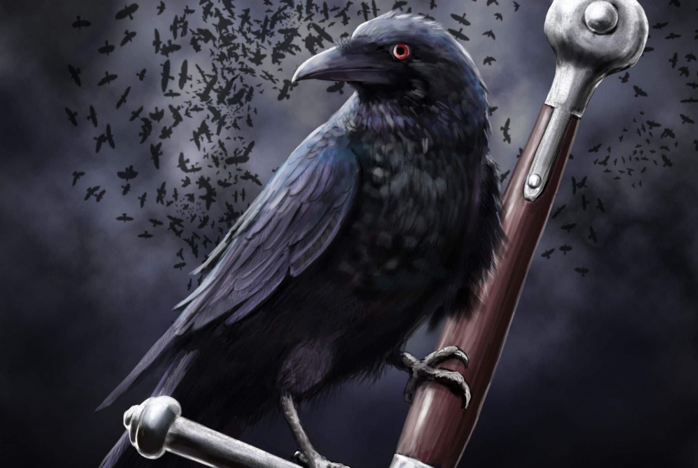

Mi nombre es Diana Marcela Pino Perafan.
Tengo 20 años y mi signo es sagitario
Nací el 16 de Diciembre de 1998 y solo estuve en un colegio llamado Sagrado Corazón
de Jesús - Salesianas.
Soy estudiante de séptimo semestre de Ingeniería de Sistemas en la
Universidad del Cauca que se encuentra ubicada en la ciudad de Popayán,
lugar donde nací y he vivido todos mis 20 años.
Soy integrante de la tribu Cuervos Maquiavélicos para la materia de Ingeniería
de Software III.